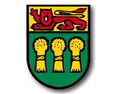
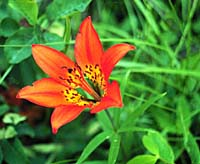
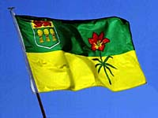
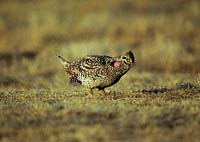
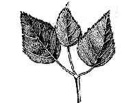
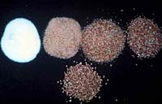
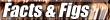
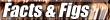

1. The Coat of Arms - granted by Royal Warrant from Queen Elizabeth II in 1986. It is an augmentation of the original shield of arms adopted by Royal Warrant of King Edward VII in 1906. A crest of a beaver and a crown in placed above the shield. On either side of the shield are supporters -- a lion and a deer. The shield itself displays the royal lion and three gold wheat sheaves, symbolizing Saskatchewan agriculture. Below the shield is the provincial motto "from many peoples strength", written in Latin. The colors are red (fires that swept through the region in early times), green (grass and other vegetation) and gold (ripening fields) The base is formed of western red lilies (Saskatchewan's floral emblem).
| 
|
2. Floral Emblem - the western red lily. Chosen in 1941, it grows in moist meadows and semi-wooded areas and is a protected species. |
|  |
3. Flag - adopted in 1969, the flag features the provincial shield of arms and the western red lily. The upper half of the flag is green (northern forests) and the lower is yellow (wheat fields). |
| 4. Provincial Tartan - has seven colors: gold, brown, green, red, yellow, white and black. It was registered with the Court of Lord Lyon King of Arms in Scotland in 1961. |
|  |
5. Bird Emblem - is the sharp-tailed grouse. Chosen in 1945, it is the province's most popular game bird. |
| 
|
6. Provincial Tree - is the white birch, adopted as the provincial tree in 1988. |
| 
|
7. Official Mineral - sylvite or potash. Saskatchewan is the world's largest producer of potash, used mainly as a fertilizer. |
|  
